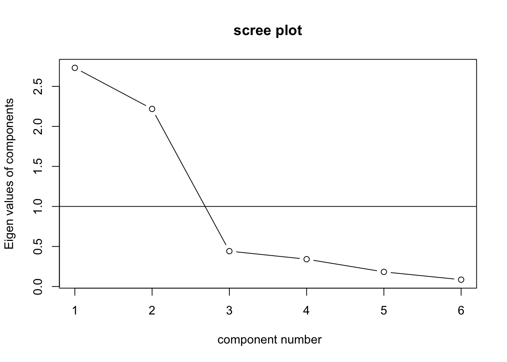
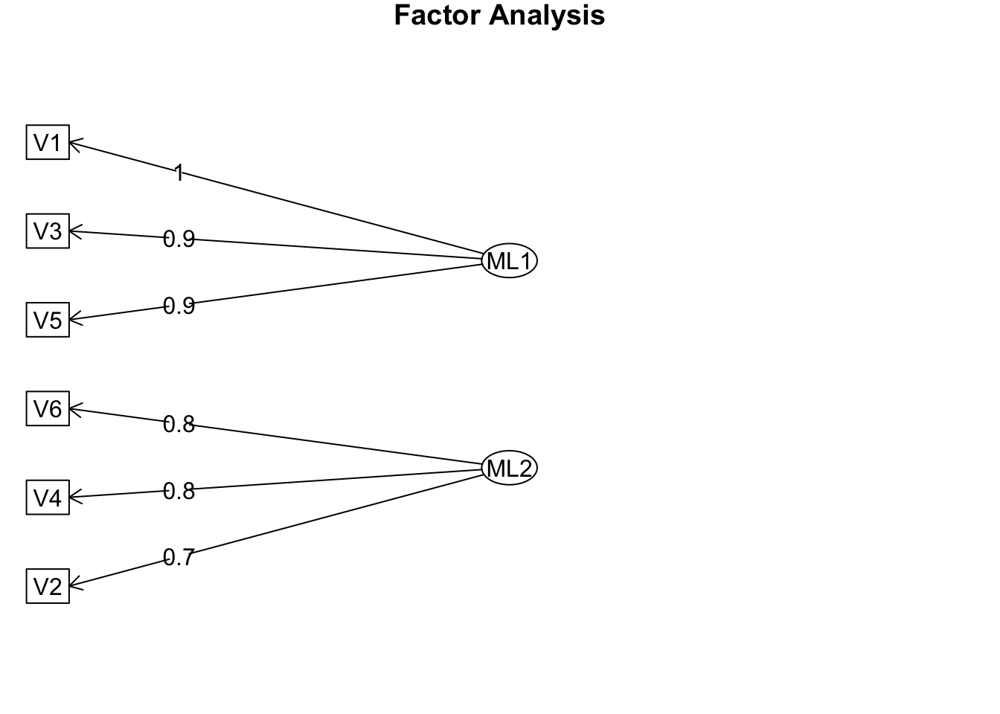
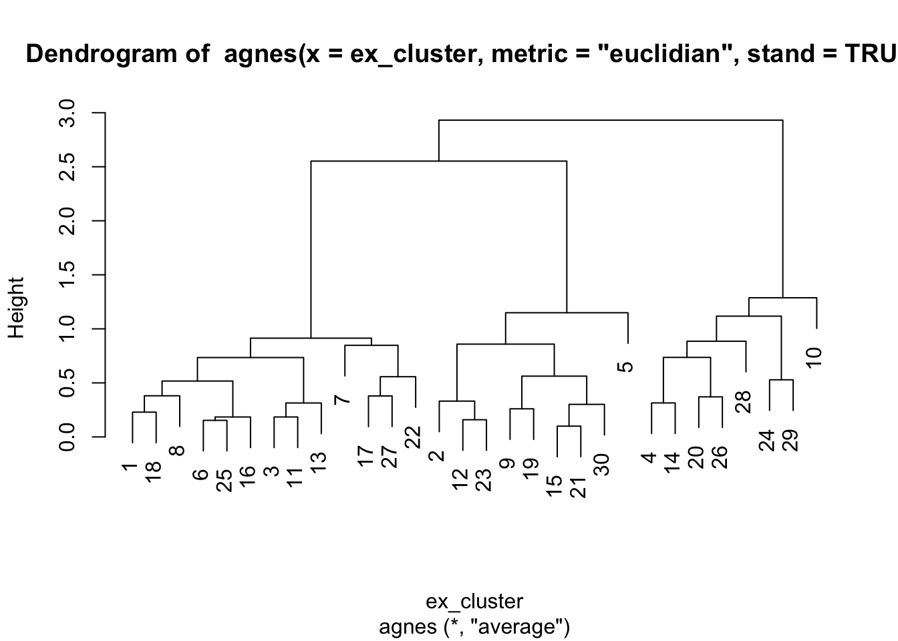
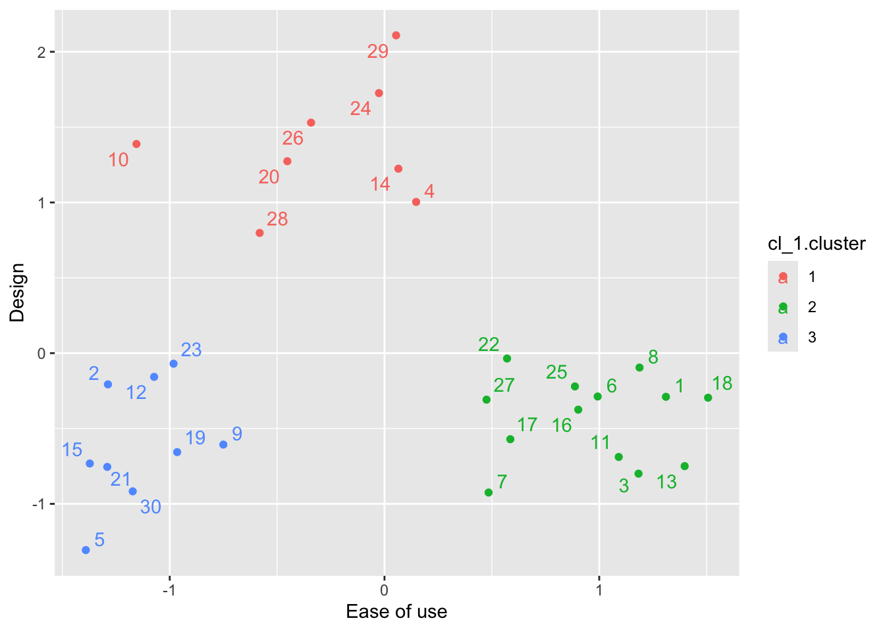

Rによる因子分析の実行
本節では、スマートフォンに関する個人の価値観について捉えた架空のデータセットを用いて、Rでの因子分析実行方法を紹介する。因子分析の実行においては、以下の手順を経ることが多い：
- データの特徴を確認
- 因子数の決定（固有値とスクリープロットを確認）
- 因子分析の実行
- 抽出された因子の解釈
- （必要ならば）因子スコアの計算と利用
本節で使用するデータセットでは、「スマートフォンを買う際に、あなた自身が重視していることについて教えて下さい。」という教示文のもと、以下の質問に回答してもらった。なお、すべての項目が7点のリッカート尺度で構成されている。
- V1: 複数のアプリを同時に使えっても快適に動作する製品を買うことが大切である。
- V2: 見た目が洗練されている製品が好きだ。
- V3: スマートフォンは、他の機器との無線通信が快適に使用できるべきである。
- V4: 人目を引くデザインをしている製品が好きだ。
- V5: 操作の容易性はスマートフォンにおいて重要な要素ではない。
- V6: スマートフォンを買う上で最も重視することは、形状を含むデザインである。
ただし、V5は値が高いほど重要性が低いことを意味する項目になっていることに注意が必要である。このような質問項目を、逆転項目（Reverse-coded item）と呼ばれ、分析の際に調整する必要がある。
ここからは実際にRを用いて分析を行っていくが、そのために psychとGPArotation というパッケージを新たに使うため、以下の要領でインストールしてほしい。
まずは、データとパッケージの読み込みを行う。なお、今回因子分析で用いるpsych::fa() という関数は、指定されているデータセットすべての変数を参照し分析を行ってしまう。そのため、このタイミングで、分析の対象となる変数のみを取り出したデータセットを作成、定義する。また、以下のコード内で逆転項目についてどのように対応しているか、見つけ出して確認してほしい。以下では、そのうえでV1からV6までの変数間の相関関係を確認している。表9 を見ると、V1はV3、V5と正の相関が高く、V2はV4、V6と正の相関が高いことが伺える。
factor_exdata <- readxl::read_excel("data/factor_ex.xlsx", na = ".")
library(psych)
library(GPArotation)
library(tidyverse)
factor_exdata$V5 <- 8 - factor_exdata$V5
rownames(factor_exdata) <- factor_exdata$ID
factor_exdata2 <- factor_exdata %>%
select(-ID)
knitr::kable(summary(factor_exdata2))| V1 | V2 | V3 | V4 | V5 | V6 | |
|---|---|---|---|---|---|---|
| Min. :1.000 | Min. :2.0 | Min. :1.0 | Min. :2.0 | Min. :1.0 | Min. :2.000 | |
| 1st Qu.:2.000 | 1st Qu.:3.0 | 1st Qu.:2.0 | 1st Qu.:3.0 | 1st Qu.:3.0 | 1st Qu.:3.000 | |
| Median :4.000 | Median :4.0 | Median :4.0 | Median :4.0 | Median :4.5 | Median :4.000 | |
| Mean :3.933 | Mean :3.9 | Mean :4.1 | Mean :4.1 | Mean :4.5 | Mean :4.167 | |
| 3rd Qu.:6.000 | 3rd Qu.:5.0 | 3rd Qu.:6.0 | 3rd Qu.:5.0 | 3rd Qu.:6.0 | 3rd Qu.:4.750 | |
| Max. :7.000 | Max. :7.0 | Max. :7.0 | Max. :7.0 | Max. :7.0 | Max. :7.000 |
| V1 | V2 | V3 | V4 | V5 | V6 | |
|---|---|---|---|---|---|---|
| V1 | 1.0000000 | -0.0532178 | 0.8730902 | -0.0861622 | 0.8576366 | 0.0041681 |
| V2 | -0.0532178 | 1.0000000 | -0.1550200 | 0.5722121 | -0.0197456 | 0.6404649 |
| V3 | 0.8730902 | -0.1550200 | 1.0000000 | -0.2477879 | 0.7778480 | -0.0180688 |
| V4 | -0.0861622 | 0.5722121 | -0.2477879 | 1.0000000 | 0.0065819 | 0.6404649 |
| V5 | 0.8576366 | -0.0197456 | 0.7778480 | 0.0065819 | 1.0000000 | 0.1364029 |
| V6 | 0.0041681 | 0.6404649 | -0.0180688 | 0.6404649 | 0.1364029 | 1.0000000 |
続いて、スクリープロットを描画し、固有値を確認する。図23 を確認すると、因子数が2から3へ増える際に大きく固有値が低下しており、3つめの因子の固有値も1を下回っている。そのため、前節で確認した判断基準から、2因子モデルを採用し、因子分析を実行する。

Figure 23: スマホデータスクリープロット
因子分析では、psych::fa() という関数を用いるのだが、この関数では引数として因子数（nfactors =）、回転（rotate =）とモデルの推定方法（fm =）を指定する。以下では、斜交（プロマックス）回転を用いた2因子モデルを最尤法（ml）で分析している。
## Factor Analysis using method = ml
## Call: fa(r = factor_exdata2, nfactors = 2, rotate = "promax", fm = "ml")
## Standardized loadings (pattern matrix) based upon correlation matrix
## ML1 ML2 h2 u2 com
## V1 0.97 0.00 0.94 0.063 1
## V2 -0.02 0.75 0.56 0.437 1
## V3 0.89 -0.12 0.83 0.174 1
## V4 -0.06 0.78 0.62 0.378 1
## V5 0.89 0.11 0.79 0.205 1
## V6 0.08 0.83 0.69 0.309 1
##
## ML1 ML2
## SS loadings 2.54 1.89
## Proportion Var 0.42 0.32
## Cumulative Var 0.42 0.74
## Proportion Explained 0.57 0.43
## Cumulative Proportion 0.57 1.00
##
## With factor correlations of
## ML1 ML2
## ML1 1.00 -0.06
## ML2 -0.06 1.00
##
## Mean item complexity = 1
## Test of the hypothesis that 2 factors are sufficient.
##
## df null model = 15 with the objective function = 4.25 with Chi Square = 111.31
## df of the model are 4 and the objective function was 0.21
##
## The root mean square of the residuals (RMSR) is 0.03
## The df corrected root mean square of the residuals is 0.05
##
## The harmonic n.obs is 30 with the empirical chi square 0.65 with prob < 0.96
## The total n.obs was 30 with Likelihood Chi Square = 5.21 with prob < 0.27
##
## Tucker Lewis Index of factoring reliability = 0.95
## RMSEA index = 0.095 and the 90 % confidence intervals are 0 0.314
## BIC = -8.39
## Fit based upon off diagonal values = 1
## Measures of factor score adequacy
## ML1 ML2
## Correlation of (regression) scores with factors 0.98 0.92
## Multiple R square of scores with factors 0.96 0.84
## Minimum correlation of possible factor scores 0.92 0.68分析を実行すると、いくつかの数値が表示される。Standardized loadingsは、各変数に対する標準化された因子負荷量を表示している。 ML1（ML2）は、最尤法によって算出された因子1（因子2）の因子負荷量を示している。そのうえで因子1はV1, 3, 5に対して因子負荷量が大きくかつそれらが正である。また、因子2はV2, 4, 6に対して因子負荷量が大きくかつそれらが正であることが示されている。また、その下のSS loadings は因子負荷の二乗和、Propotion Var は各因子の寄与率（説明された分散比率）、Cumulative Var は累積寄与率、Proportion Explained は潜在因子で説明されている分散のうち、各因子が占める分散の比率を表している。これらを踏まえると、因子1は「マルチタスクの快適性」（V1）、「無線通信」（V2）、「操作容易性」（V3）に、因子2は「洗練された見た目」（V4）、「人目を引くデザイン」（V5）、「デザイン」（V6）に影響を与えるものであり、2つの因子で全体の約74%を説明していることになる。この結果を踏まえ、これら2つの因子が何を表しているかを解釈することになる。例えば、因子1は「使いやすさ」、因子2は「デザインの良さ」という名前をつけるかたちで、上記の結果を解釈する事ができる。
Rを使うと簡単に、因子、観測変数と、因子負荷量との関係を図示化することもできる。fa.diagram()という関数をつかうのだが、これを用いると、高い因子負荷量を持つ因子からのみ矢印を引くように設定されている。simple = FALSE という引数を設定することで、複数の因子から線を引くことも可能であるが、図が複雑になり見にくくなる。そのため、デフォルトの設定で図示化を行うと、図24 の通りの結果を得る。

Figure 24: 図示化された因子モデル
得点化の説明で紹介した因子スコアも、因子分析の結果から抽出できる。fa でストアされた結果の場合、fa$scores と指示することで、因子スコアにアクセスできる。ここでは、因子スコアを元データに結合してみる。
fs <- data.frame(fa$scores)
factor_exdata2$rowname <- rownames(factor_exdata2)
fs$rowname <- rownames(fs)
factor_exdata2 <- left_join(factor_exdata2, fs, by = "rowname")
knitr::kable(head(factor_exdata2),caption = "結合後データ")| V1 | V2 | V3 | V4 | V5 | V6 | rowname | ML1 | ML2 |
|---|---|---|---|---|---|---|---|---|
| 7 | 3 | 6 | 4 | 6 | 4 | 1 | 1.3106155 | -0.2896470 |
| 1 | 3 | 2 | 4 | 3 | 4 | 2 | -1.2878038 | -0.2073067 |
| 6 | 2 | 7 | 4 | 7 | 3 | 3 | 1.1828544 | -0.7996332 |
| 4 | 5 | 4 | 6 | 6 | 5 | 4 | 0.1474225 | 1.0035837 |
| 1 | 2 | 2 | 3 | 2 | 2 | 5 | -1.3907544 | -1.3067260 |
| 6 | 3 | 6 | 4 | 6 | 4 | 6 | 0.9928111 | -0.2875982 |
せっかくなので、今結合したデータを用いて、抽出された因子に基づくクラスター分析を実行してみよう。まず、階層的クラスター分析を実施し、図25 を参照し、便宜的に3クラスターモデルを仮定する（エルボー法などは省略）。
library("cluster")
library("factoextra")
library("useful")
library("ggrepel")
ex_cluster <- factor_exdata2 %>%
select(ML1, ML2)
Hier1 <- agnes(ex_cluster, metric = "euclidian", stand = TRUE)
pltree(Hier1)
Figure 25: 2因子に基づくデンドログラム
ここでは3クラスターを仮定し、K-means法でクラスター分析を実施し、その結果を図示化する。なお、以下では図のみを載せるが、関心のある学生はクラスター分析の結果も出力してみてほしい。図26 を見ると、デザインと使いやすさのどちらも求めている顧客層はおらず、使いやすさを重視している人たちはあまりデザインを重視していない事が伺える。一方でデザインと使いやすさの両方で低いスコアを有しているグループもあり、このグループの人たちはデザインと使いやすさの両方に対するスコアが低い。
cl_1<- kmeans(ex_cluster,3)
clus_fa <- data.frame(cl_1$cluster)
clus_fa$rowname <- rownames(clus_fa)
factor_exdata2 <- left_join(factor_exdata2, clus_fa, by = "rowname")
factor_exdata2$cl_1.cluster <- factor(factor_exdata2$cl_1.cluster)
##Visualizing the clusters with 2 factors
p1 <- ggplot(data = factor_exdata2,
mapping = aes(x = ML1, y = ML2, color = cl_1.cluster))
p1 + geom_point() +
geom_text_repel(mapping = aes(label = rownames(factor_exdata2))) +
labs(x = "Ease of use", y = "Design")
Figure 26: 2因子に基づくクラスター
以上のように因子分析は、（1）データの確認、（2）因子数の決定、（3）因子分析の実行、（4）解釈と名前付け、（5）事後的な分析、というステップを経て実行される事が多い。特にマーケティングや消費者行動論の分野では、因子分析による因子の解釈で完結するのではなく、その後の分析に因子を活用する事が多い。また、本節では因子スコアを用いた事後分析を紹介したが、合計値法（平均値の活用）を用いるとすれば、「使いやすさ（EoU）」を表す変数を、\(EoU_i=(V1_i+V3_i+V5_i)/3\) という対応する変数の平均値によって定義し、同様に、「デザインの良さ（Des）」は 、\(Des_i=(V2_i+V4_i+V6_i)/3\) によって定義し、各回答者の得点を計算する。
このような変数作成を行うと、平均値算出で用いた変数以外（例えば、使いやすさに対するV2, V4, V6）は影響を与えないと仮定してよいのか、という疑問が残るだろう。実際に、それはとても強い仮定である。このような疑問に対して統計的な判断を与えるのが、確認的因子分析というアプローチである。因子分析において、モデルに含まれていない変数の因子負荷量がゼロであるという仮定のもと、その仮定に基づくモデルとデータとの適合度を調べるような方法を確認的因子分析と呼ぶ。この方法については発展的な内容になるため本書では割愛する。